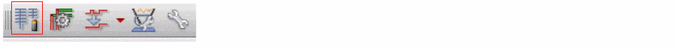
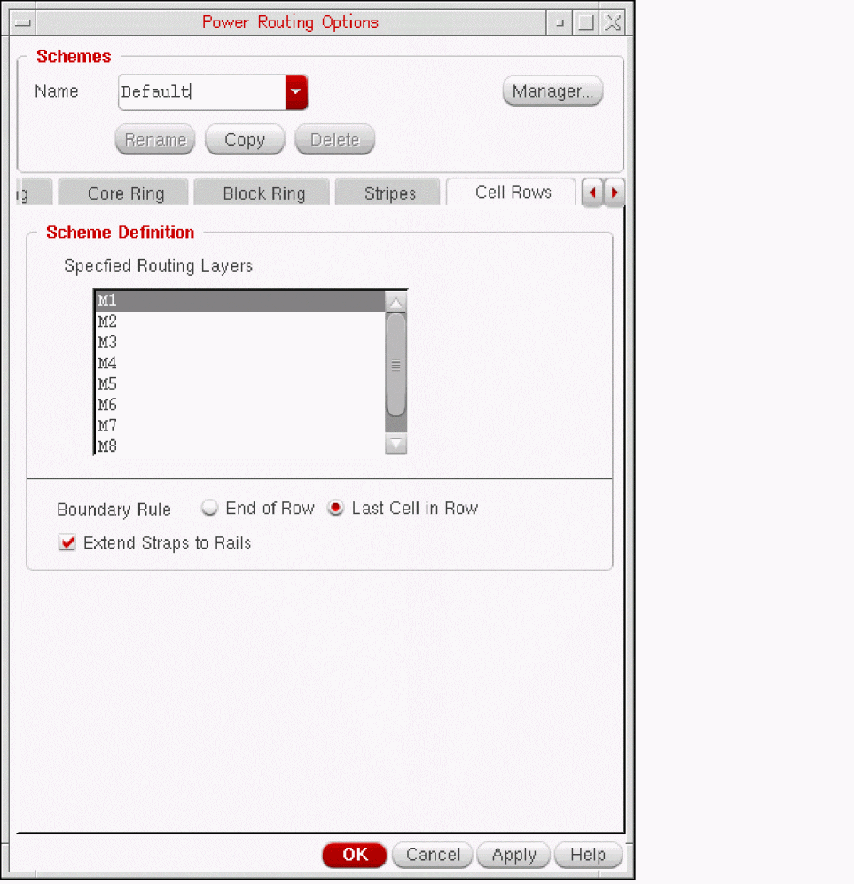

3
Power Routing
This chapter describes the features and functionality of the Virtuoso Space-based Router power router.
The following sections are included:
- Power Router Features
- Requirements
- Recommended Power Router Flow
- Using the Power Routing Form
- Using the Pad Ring Form
- Using the Core Ring Form
- Using the Block Ring Form
- Using the Stripes Form
- Using the Cell Rows Form
- Using the Pin To Trunk Form
- Using the Vias Form
- Using the Tie Shield Form
- Setting the Packages for the Scheme
- Managing Schemes
- Using SKILL for Power Routing
Power Router Features
Virtuoso Space-based Router power routing constructs the common power components shown in the following figure:
Requirements
To use the power router, you must load a design that includes technology information and pin-to-net assignments.
Power routing functions are dependent on signal type being set to power or ground. Use the Property Editor Assistant to set the signal type.
Recommended Power Router Flow
For a simple power supply network, you perform the following tasks in sequence.
- Adding a Pad Ring
- Adding Core Rings
- Adding Block Rings
- Connecting Pin-to-Trunk
- Adding Stripes
- Adding Standard Cell Row Straps
- Trimming Stripes
- Inserting Vias
- Tie Shielding
The rings and stripes provide the foundation for hooking up each cell to a power source. The order of the steps is design-dependent. Not all designs will require all of the steps to be performed. For example, if the design does not include a ring of pads, the pad ring step is not needed. You might choose to connect pin-to-trunk following the addition of the core ring and after adding each block ring.
Adding a Pad Ring
Pad rings are routed between pads on the periphery of the design. You can route to rail pins and/or edge pins on pads.
Adding Core Rings
If the design has pads, rings are added around the core of the design. If there are no pads, rings are added around the entire design.
Adding Block Rings
Block rings are wires around one or more block instances, on a set of specified layers with a specific offset between the boundaries of the blocks and the power rings. Rings can follow the contour of the blocks or form a rectangle around the blocks.

Connecting Pin-to-Trunk
Power pins on blocks and power pads are connected to existing power rings or rails. The following example shows pin-to-trunk connections between pad pins and the core rings in the lower right corner.
Adding Stripes
Stripes, which can be used to form a power mesh, are added to the core area in the design. You specify parameters such as which layers to use for the given nets, the clearance required between nets, pin clearance, the location and interval for the stripes. In a later step, vias are inserted to connect the stripes within the mesh to the rings.
Adding Standard Cell Row Straps
Straps are added along aligned power pins of standard cells. The straps can be extended to the end of rows or to the last cell in a physical row.
Trimming Stripes
Stripes are trimmed back to an intersecting ring on the same net, if any. You can run this command after all stripes and rings have been created.
See
Inserting Vias
The current power routing topology does not support inserting vias instantaneously except connecting pin-to-trunk. Therefore, vias are added manually to provide interlayer connections at intersections of rings, stripes and straps. The following example shows vias inserted to connect stripes and straps to the core rings in a corner of a simple design.
By default, cut arrays are inserted with the maximum number of rows and columns for the size of the via area. The following examples show different cut arrays that can be created for the same via by changing command arguments.
Tie Shielding
You can add ties to tie shield wires to the shield nets in the design either using the Route – Tie Shield command or using the Tie Shield tab in the Power Routing form. You can also set the tie frequency. For more information, refer to Using the Tie Shield Form and Tie Shield.
Using the Power Routing Form
Using the Power Routing form, you can create power components in your design. To display the Power Routing form, choose one of the following methods.
- The Route menu is available by default in layout window. Choose Route – Power Routing.
-
Alternatively, you can add the Space-based Router toolbar by choosing Window - Toolbars - Space-based Router and click the Power Routing icon in the toolbar
 -
With the Route menu displayed, you can press the P key on your keyboard to display the Power Routing form.
The Power Routing form appears with tabs that represent a power component. - Pad Ring
- Core Ring
- Block Ring
- Stripes
- Cell Rows
- Pin To Trunk
- Vias
- Tie Shield
In each tab you choose settings for the power component and can specify or edit the scheme to use. The settings on the main form for the component typically specify the objects to operate on. For example, these settings might specify the nets, pads, or blocks to use.
Schemes provide a fast, simple, and reproducible method to set up the power routing environment variables. Each power routing option has its unique scheme package comprised of a group of environment variables associated with it by default. To modify environment variables for a specific routing option, you can either alter the variable values in the default scheme or save changes into a customized scheme.
For more information on creating, deleting, comparing and other scheme functions, refer to Managing Schemes.
To route power components in your design, do the following.
-
Select at least one power or ground net before starting any power routing operation.
If a power routing package is not defined in the currently selected scheme, the tab corresponding to that power routing package is disabled. To enable the tab, define a scheme for the power routing package. You can then route that particular power routing component. - In the Power Routing form, click the tab of the component you want to route.
- Set all the options in the scheme subform for that power routing component.
- Click the Route button at the bottom of the Power Routing form to perform that particular power routing operation.
The following sections describe how to use the tabs in the Power Routing forms:
- Using the Pad Ring Form
- Using the Core Ring Form
- Using the Block Ring Form
- Using the Stripes Form
- Using the Cell Rows Form
- Using the Pin To Trunk Form
- Using the Vias Form
- Using the Tie Shield Form
The Power Routing Options form, which lets you view and edit the scheme package for each power routing option, can be accessed by choosing the Edit button from each of the tabs on the power routing form.
Using the Pad Ring Form
Pad Ring routing adds a ring between pad instances on the periphery of the design.
rtePowerRoutePadRing SKILL command, see Creating Pad Ring Using Power Routing.To add pad rings to your design, do the following:
-
Click the Pad Ring tab.
The Pad Ring tabbed page displays.
- Use the Navigator or the Search Assistant to select the power or ground nets to route.
-
Use the Navigator or Search Assistant to select the pads to connect.
If you do not select a pad, pad ring routing connects all pads. -
To change or modify scheme options, do one of the following:
- Select a different scheme from the Name drop-down list box.
- Click Edit... to view or change the pad ring scheme definition.
The Power Routing Options form displays.
Follow the procedure in Changing the Pad Ring Scheme Definition. - Click Route to add pad rings with the options in the scheme.
Changing the Pad Ring Scheme Definition
The Pad Ring tab of the Power Routing Options form lets you specify pin layers and pin types to which to connect pad rings for the scheme.
To change the Pad Ring scheme definition:
- Select the scheme name you want to use from the Name drop-down list box.
-
In the Scheme Definition group box, choose the Pin Layers that you want to connect.
-
By default, pad ring routing uses all the available routing layers. To specify pin layer to route on pad, select Specified Pin Layers. Once the Specified Pin Layers is selected, you can select the required routing layers in the list box.
Click a layer to highlight it.Ctrl+click to add an additional layer.Shift+click adds layers inclusively.
To remove one or more layers from the highlighted set, click the layer name.
-
By default, pad ring routing uses all the available routing layers. To specify pin layer to route on pad, select Specified Pin Layers. Once the Specified Pin Layers is selected, you can select the required routing layers in the list box.
- Choose the Pin Types that you want the pad rings to connect to.
- To apply the settings without closing the form, click Apply. To apply the settings and close the form click OK.
Using the Core Ring Form
Core Ring routing adds a ring around the core of a design that is surrounded by pad instances or I/O pins.
To add core rings to your design, do the following:
-
Click the Core Ring tab.
The Core Ring tabbed page displays.
-
In the Nets Ordering group box, order the nets for the core rings.
- Use the Navigator or Search Assistant to select power or ground nets.
- Click Selected Nets to import the selected nets to the form.
Nets are routed with the first net in the list as the innermost ring and the last net in the list as the outermost ring. A net can appear in the list more than once.- Reorder nets by highlighting a net, then click the up or down arrow to change its position in the list.
-
Duplicate one or more nets by highlighting the net names, then click the duplicate icon.
By default, the duplicate nets are appended at the bottom of the list. - Delete one or more nets by highlighting the net names, then click the delete icon.
-
To change or modify scheme options, do one of the following:
- Select a different scheme from the Name drop-down list box.
- Click Edit... to view or change the core ring scheme definition.
The Power Routing Options form displays.
Follow the procedure in Changing the Core Ring Scheme Definition. - Click Route to add core rings with the options in the scheme.
Changing the Core Ring Scheme Definition
The Core Ring tab of the Power Routing Options form lets you specify the core ring location and configuration for the scheme.
To change the Core Ring scheme definition:
- Select the scheme name you want to use from Name drop-down list box.
-
In the Ring Location section of the Scheme Definition group box, choose between the following:
- Centered between Core and Pads creates a ring between the core area of the design and the surrounding pad instances.
-
Route the core ring Relative To one of the following:
- Core (outside) places the core ring relative to the outside the core of the design.
- I/O Pads (inside) places the core ring relative to the inside of the pads.
- Specific Region (inside) places the core ring inside the region given in step 3.
- Specific Region (outside) places the core ring outside the region given in step 3.
-
If you chose a Specific Region in step 2, the Coordinates section allows you to specify the region by doing one of the following:
- Enter the values using the spin boxes for the lower-left (XLo, YLo) and the upper-right (XHi, YHi) coordinates for the region.
- Click Create. Then, draw the region (LMB) in the workspace by dragging a rectangle from a lower-left coordinate to an upper-right coordinate. The coordinate positions are automatically entered in the form.
- In the Ring Location section, enter the Clearance between the core ring and the boundary you chose in step 2.
- In the Routing Configuration section of the Scheme Definition group box, select a Horizontal Routing Layer from the drop-down list box.
-
In the Routing Configuration section, select a Vertical Routing Layer from the drop-down list box.
-
In the Routing Configuration section, choose the Routing Style for multiple core rings from the following:
Adds latticed core rings. Duplicate wire segments extend to form a lattice.
- In the Routing Configuration section, set a Ring Clearance to specify the minimum spacing between the power/ground nets in the core ring. The Ring Clearance label next to the field indicates the minimum spacing value of the layer. If the Ring Clearance value is greater than the mentioned value, the label color is black; otherwise, the color is red.
- In the Routing Configuration section, set a Ring Width to specify the total width for each power/ground net. The Ring Width label next to the field indicates the minimum and maximum width of the layer. If the Ring Width value is within the minimum and maximum values, the label color is black; otherwise, the color is red.
- To apply the settings without closing the form, click Apply. To apply the settings and close the form click OK.

Using the Block Ring Form
Block Ring routing adds rings around block instances.
To add block rings to your design, do the following:
-
Click the Block Ring tab.
The Block Ring tabbed page displays.
- Use the Navigator or Search Assistant to select the blocks around which to add rings.
-
In the Nets Ordering group box, order the nets for the block rings.
- Use the Navigator or Search Assistant to select the power or ground nets.
- Click Selected Nets to add the selected nets to the form.
Nets are routed with the first net in the list as the innermost ring and the last net in the list as the outermost ring. A net can appear in the list more than once.- Reorder nets by highlighting a net, then click the up or down arrow to change its position in the list.
-
Duplicate one or more nets by highlighting the net names, then click the duplicate icon.
The net name duplicates at the bottom of the list. - Delete one or more nets by highlighting the net names, then click the delete icon.
-
In the Blocks group box, choose the Style in which to add block rings.
-
To change or modify scheme options, do one of the following:
- Select a different scheme from the Name drop-down list box.
- Click Edit... to view or change the block ring scheme definition.
The Power Routing Options form displays.
Follow the procedure in Changing the Block Ring Scheme Definition. - Click Route to add block rings with the options in the scheme.
Changing the Block Ring Scheme Definition
The Block Ring tab of the Power Routing Options form lets you specify the ring and routing configuration for block rings.
To change the Block Ring scheme definition:
- Select a scheme name from the Name drop-down list box.
-
In the Ring Configuration section, if you chose to create shared rings around all of the given blocks as a group in step 4 of the Block Ring tab, choose the Routing Style for the block rings.
- In the Ring Configuration section, choose the block clearance to specify the clearance of the block rings to the prBoundary of the block.
- In the Routing Configuration section, select a Horizontal Routing Layer from the drop-down list box.
-
In the Routing Configuration section, select a Vertical Routing Layer from the drop-down list box.
-
In the Routing Configuration section, choose the Routing Style for multiple block rings from the following:
Adds latticed block rings. Duplicate wire segments extend to form a lattice.
- In the Routing Configuration section, choose the Ring Clearance to specify the minimum spacing between the power/ground nets in the ring. The Ring Clearance label next to the field indicates the minimum spacing value of the layer. If the Ring Clearance value is greater than the mentioned value, the label color is black; otherwise, the color is red.
- In the Routing Configuration section, choose the Ring Width to specify the total width for each power/ground net. The Ring Width label next to the field indicates the minimum and maximum width of the layer. If the Ring Width value is within the minimum and maximum values, the label color is black; otherwise, the color is red.
- To apply the settings without closing the form, click Apply. To apply the settings and close the form click OK.

Using the Stripes Form
Stripes routing adds net stripes at regular intervals.
To add stripes to your design, do the following:
-
Click the Stripes tab.
The Stripes tabbed page displays.
-
In the Nets Ordering section, order the nets for the stripes.
- Use the Navigator or Search Assistant to select the power or ground nets.
- Click Selected Nets to add the selected nets to the form.
Nets are routed with the first net in the list as the innermost ring and the last net in the list as the outermost ring. A net can appear in the list more than once.- Reorder nets by highlighting a net, then click the up or down arrow to change its position in the list.
-
Duplicate one or more nets by highlighting the net names, then click the duplicate icon.
The net name duplicates at the bottom of the list. - Delete one or more nets by highlighting the net names, then click the delete icon.
-
In the Region section, specify the region in which to add the stripes.
-
Entire Cell View
Use the current place and route boundary (prBoundary) for the design.
When Entire Cell View option is selected, stripes extension is determined by the core ring and prBoundary of the current cell view. If core rings exist, stripes extends to the inner most core ring. Else, they are extended to the prBoundary and covers the entire design. More than one routing region can be given. -
View Area Only
Use the current zoom area for routing. If the zoom area is outside the prBoundary, a warning is issued. -
A Selected Boundary
Use a selected boundary for routing. The boundary can be either a cluster boundary or an area boundary. However, you can select only one boundary at a time for routing. If you select more than one boundary, a warning is issued.
If the selected boundary is outside the prBoundary, a warning is issued. -
Custom Area
Allows you to specify the region by doing one of the following:- Enter the values using the spin boxes for the lower-left (XLo, YLo) and the upper-right (XHi, YHi) coordinates for the region.
- Click Create. Then draw the region in the workspace by dragging a rectangle from a lower-left coordinate to an upper-right coordinate. The coordinate positions are automatically entered in the form.
-
Entire Cell View
-
To change or modify scheme options, do one of the following:
- Select a different scheme from the Name drop-down list box.
- Click Edit... to view or change the stripes scheme definition.
The Power Routing Options form displays.
Follow the procedure in Changing the Stripes Scheme Definition. - Click Route to add stripes with the options in the scheme.
Changing the Stripes Scheme Definition
The Stripes tab of the Power Routing Options form lets you specify the placement and configuration of the horizontal and vertical stripes.
To change the stripes scheme definition:
- Select the scheme name you want to use from the drop-down list box.
-
In the Scheme Definition group box, choose whether you want Horizontal Stripes to be created.
-
Choose the horizontal Step Increment from the spin box.
The router uses this value to separate the horizontal stripes. -
Specify the Routing Layers for the horizontal stripes.
Highlight a layer in the list box to select it.
Ctrl+click to highlight additional layers.Shift+click to highlight layers inclusively.
To deselect a highlighted layer, click the layer in the list box.
-
Choose the horizontal Step Increment from the spin box.
-
In the Scheme Definition section, choose whether you want Vertical Stripes to be created.
-
Choose the vertical Step Increment from the spin box.
The router uses this value to separate the vertical stripes. -
Specify the Routing Layers for the vertical stripes.
Highlight a layer in the list box to select it.
Ctrl+click to highlight additional layers.Shift+click to highlight layers inclusively.
To deselect a highlighted layer, click the layer in the list box.
-
Choose the vertical Step Increment from the spin box.
-
In the Stripe Configuration section, set the following:
- Choose the Pin Clearance from the spin box to specify the clearance required between signal pins and stripes. The Pin Clearance label next to the field indicates the minimum clearance required between signal pins and stripes. If the Pin Clearance value is greater than the mentioned value, the label color is black; otherwise, the color is red.
- Choose the Net Clearance from the spin box to specify the minimum spacing required between the power/ground nets within a stripe. The Net Clearance label next to the field indicates the minimum spacing value between the power and ground nets within a stripe. If the Net Clearance value is greater than the mentioned value, the label color is black; otherwise, the color is red.
- Choose the Net Width from the spin box to specify the total width for each routed net. The Net Width label next to the field indicates the minimum and maximum width of each routed net. If the Net Width value is within the minimum and maximum values, the label color is black; otherwise, the color is red
-
Choose the Minimum Stripe Length from the spin box. The Minimum Stripe Length label next to the field indicates the minimum length of the stripes. If the Minimum Stripe Length value is greater than the mentioned value, the label color is black; otherwise, the color is red.The Minimum step increment = (Net Width + Net Clearance)* Number of selected Power nets. For instance, if you create power mesh for VSS, VDD, DVDD, and GND nets, then the minimum step increment is computed as follows:
min = (Wnet + Wnet_clearance)*N N=len(VDD, DVDD, VSS, GND)Else, the routing fails due to insufficient step size.
-
In the Relative Start Location, set the following:
- Choose the stripes to be placed with the left and right Offset From either the Design Boundary, the design Origin, or the Routing Area (the routing regions given on the Stripes tab of the Power Routing form).
-
Choose the Left offset from the spin box to specify the
Xlocation of the first vertical stripe. -
Choose the Bottom offset from the spin box to specify the
Ylocation of the first horizontal stripe. - Choose whether the stripe offsets are measured Relative To the Edge of Stripe (left edge for vertical stripes and bottom edge for horizontal stripes), or the Center Line of Stripe.
- To apply the settings without closing the form, click Apply. To apply the settings and close the form click OK.
Using the Cell Rows Form
Cell Row routing adds straps along aligned pins of standard cells. The criteria for cell row power routing are the following:
- the net must be a power net
- the pin must be a power pin
- the cell must be a standard cell
- the pin shape should be rectangular
To add straps in your design, do the following:
-
Click the Cell Rows tab.
The Cell Rows tabbed page displays.
-
In the Region section, choose the regions in which to add the standard cell straps by doing one of the following:
-
Entire Cell View
Use the current place and route boundary (prBoundary) for the design.
If no routing regions are given, and core rings exist, the core rings become the bounds for the cell rows. If no routing regions are given, and core rings do not exist, cell rows will cover the entire design. More than one routing region can be given. -
View Area Only
Use the current zoom area for routing. If the zoom area is outside the prBoundary, a warning is issued. -
A Selected Boundary
Use a selected boundary for routing. The boundary can be either a cluster boundary or an area boundary. However, you can select only one boundary at a time for routing. If you select more than one boundary, a warning is issued.
If the selected boundary is outside the prBoundary, a warning is issued. -
Custom Area
Allows you to specify the region by doing one of the following:- Enter the values using the spin boxes for the lower-left (XLo, YLo) and the upper-right (XHi, YHi) coordinates for the region.
- Click Create. Then draw the region in the workspace by dragging a rectangle from a lower-left coordinate to an upper-right coordinate. The coordinate positions are automatically entered in the form.Choose the nets to route cell row straps for.
-
Entire Cell View
-
To change or modify scheme options, do one of the following:
- Select a different scheme from the Name drop-down list box.
- Click Edit... to view or change the cell rows scheme definition.
The Power Routing Options form displays.
Follow the procedure in Changing the Cell Rows Scheme Definition. - Click Route to add standard cell row straps with the options in the scheme.
Changing the Cell Rows Scheme Definition
The Cell Rows tab of the Power Routing Options form lets you specify routing layers, the cell row strap boundary, and whether the cell row straps should be extended to the nearest power rail.
To change the Cell Rows scheme definition:
- Select the scheme name you want to use from the Name drop-down list box.
-
In the Scheme Definition group box, choose the routing layers that you want to connect.
- Use the Navigator or Search Assistant to select the nets.
-
Specify the routing layers in the Specified Routing Layers list box.
Highlight a layer in the list box to select it.
Ctrl+click to highlight additional layers.Shift+click to highlight layers inclusively.
To deselect a highlighted layer, click the layer in the list box.
- In the Scheme Definition group box, choose the Boundary Rule.
-
Choose whether you want the cell row straps to Extend Straps to Rails.
Extends straps to the farthest power rail. - To apply the settings without closing the form, click Apply. To apply the settings and close the form click OK.
Using the Pin To Trunk Form
Pin-To-Trunk routing allows you to add connections from the power pins of pad or macro instances to existing rings and rails. A macro instance is defined as any instance whose area is greater then 90 percent of the entire cell view area.
To route pin-to-trunk connections, do the following:
-
Click the Pin To Trunk tab.
The Pin To Trunk tabbed page displays.
- Use the Navigator or Search Assistant to select the power or ground nets to route.
-
Use the Navigator or Search Assistant to select the pad or macro instances to which to add pin-to-trunk connections.
If no pad or macro instances are specified, the router uses all pad and macro instances. -
To change or modify scheme options, do one of the following:
- Select a different scheme from the Name drop-down list box.
- Click Edit... to view or change the pin-to-trunk scheme definition.
The Power Routing Options form displays.
Follow the procedure in Changing the Pin-To-Trunk Scheme Definition. - Click Route to add pin-to-trunk connections with the options in the scheme.
Changing the Pin-To-Trunk Scheme Definition
The Pin To Trunk tab of the Power Routing Options form lets you specify pin layers, trunk layers, and connection rules.
To change the Pin To Trunk scheme definition:
- Select the scheme name you want to use from the Name drop-down list box.In the Scheme Definition group box, do one of the following to specify pin layers that you want to connect:
- In the Scheme Definition group box, choose the Specified Trunk Layer that you want to connect.
-
In the Scheme Definition group box, specify the Connection Rules that you want to use.
- Choose the Minimum Trunk Width in the spin box to specify the minimum trunk width for a trunk to be connected to a pin.
-
Choose the Minimum Wire Width in the spin box to specify the minimum wire width for a wire to connect from a pin to a trunk.If you specified a trunk layer in the Specified Trunk Layer drop-down list box, the numbers to the right of the Minimum Trunk Width and Minimum Wire Width spin boxes are the value of the minWidth constraint of the selected layer.If you did not specify a trunk layer, the numbers to the right of the spin boxes are the largest minWidth of all the Specified Pin Layers. If you then set a Minimum Wire Width value that is smaller than the number to the right of the spin box, you are likely to violate the minWidth on layers with smaller minimums. Best practice is to set a value greater than or equal to this number, in which case the number is black.
-
Choose the Maximum Wire Width in the spin box to specify the maximum wire width for a wire to connect from a pin to a trunk.
Pin to Trunk uses the largest wire width that does not exceed the Maximum Wire Width or the width of the pin.If you specify a trunk layer in the Specified Trunk Layer drop-down list box, the numbers to the right of the Minimum Trunk Width, Minimum Wire Width, and Maximum Wire Width in the Connection Rules section will be updated to the corresponding layer constraint values.If you did not specify a trunk layer, the number to the right of the spin box is the smallest maxWidth of all the Specified Pin Layers. If you then set a Maximum Wire Width that is larger than this number, you are likely to violate the maxWidth on layers with smaller maximums. Best practice is to set a value less than or equal to this number, in which case the number is black.
- To apply the settings without closing the form, click Apply. To apply the settings and close the form click OK.
Using the Vias Form
Vias routing adds vias for interlayer connection at intersections of rings, rails, stripes, straps, and cell rows, or between instance pins and stripes.
To add vias in your design, do the following:
-
Click the Vias tab.
The Vias tabbed page displays.
-
Choose the Via Locations to add.
Inter-layer connections can take place at one of the following:- Intersection of All Rings, Stripes, and Cell Rows adds vias at the intersections of all rings, stripes, and cell rows.
- Selected Instances adds vias between stripes and the pins of selected block instances.
- Use the Navigator or Search Assistance to select the block instances.
- Pin Layer determines the layer to which the via should be inserted.
-
To change or modify scheme options, do one of the following:
- Select a different scheme from the Name drop-down list box.
- Click Edit... to view or change the vias scheme definition.
The Power Routing Options form displays.
Follow the procedure in Changing the Vias Scheme Definition. - Click Route to add vias with the options in the scheme.
Changing the Vias Scheme Definition
The Vias tab of the Power Routing Options form lets you specify layers and cut array types.
To change the Vias scheme definition:
- Select the scheme you want to use from the Name drop-down list box.
- In the Scheme Definition group box, choose the Layers that you want to connect.
-
Choose the Cut Array type.
-
Square
Specifies a square cut array for each via, with an equal number of rows and the number of columns. However, the cut array might not be square in size, depending on spacing rules. If theminAdjacentViaSpacingrule is set, then the spacing of the cuts can be different in the X and Y directions, producing a cut array that is rectangular in dimension. -
Rectangular
Specifies that the maximum number of rows and columns for the cuts be used for the available space. -
Specified Array Size
Inserts vias with cut arrays of a specific dimension. If the cut array with these dimensions cannot fit within a via area, no via is created for that metal intersection. Choose the number of Rows and Columns from their respective spin boxes.
-
Square
- To apply the settings without closing the form, click Apply. To apply the settings and close the form click OK.
Using the Tie Shield Form
Ties shield wires to shield nets in the design. Do the following:
-
Click the Tie Shield tab.
The Tie Shield tabbed page displays.
-
In the Tie Frequency section, choose the distance between the ties.
-
Choose the frequency of the Shield ties.
Specifies the maximum distance between ties that must be inserted to tie the new shield wires to their respective shield nets. The Shield label next to the field indicates the maximum distance that should exist to tie the new shield wires to their respective shield nets. If the Shield value is greater than the mentioned value, the label color is black; otherwise, the color is red. -
Choose the frequency of the Coax shield ties.
Specifies the maximum distance between ties that must be inserted to tie tandem shield wires and parallel shield wires for coaxial shielding. The Coax label next to the field indicates the maximum distance that should exist to tie tandem shield wires and parallel shield wires for coaxial shielding. If the Coax value is greater than the mentioned value, the label color is black; otherwise, the color is red.The number to the right of the spin boxes is the largest minSpacing value in the design. If the color of the number is red, the current setting in the spin box is smaller than the largest minSpacing constraint value. You are then likely to violate the minSpacing on layers with larger minimums. Best practice is to set a value greater than or equal to this number, in which case the number is black.
-
Choose the frequency of the Shield ties.
- Click Route to tie the shield wires to the nets.
Setting the Packages for the Scheme
To select the packages available in the scheme, do the following:
- In the Power Routing form, select the scheme you want to use from the Name drop-down list box.Click Edit to display the Power Routing Options form.
- Click the Setup tab.
- In the Scheme Packages section, select the packages that are part of this scheme. The options are the following:
- Click Close to apply the settings and close the form.
Managing Schemes
In the Power Routing Options form, you can manipulate schemes using the following options:
Creating New Schemes
To create a new scheme, do the following:
- Click Edit to display the Power Routing Options form.
-
In the Power Routing Options form, ensure that the Name field displays the name of the scheme as
Default. -
Click the Copy button.
A copy of the scheme now exists and the name is displayed asDefault_n. The default name is the original scheme name with_n, where n is a number, automatically appended. -
Optionally, you can rename the scheme by entering the new name in the Name field and clicking Rename. Specify the scheme name as
myBlockRing. - Click the Block Ring tab and make some changs to the setiings
-
Specify the block clearance value as
1.200in the Block Clearance field. -
Click OK or Apply to save the
myBlockRingscheme to the memory.
A new scheme is created and saved in the memory.
Deleting a Scheme
To delete a scheme, do the following:
- In the Power Routing Options form, display the name of the scheme to delete in the Name field.
-
Click the Delete button.
Loading a Scheme
You can load a scheme from a file.
- Display the Power Routing Scheme Manager form by clicking the Manager button from either the Power Routing or Power Routing Options form.
- Ensure you are in the File tab of the Power Routing Scheme Manager form.
-
Enter the name of the file containing the schemes in the Name field.
Alternatively, you can use the Browse button to select the file containing the schemes. -
Click the Load button to load all the schemes in the file into the power routing scheme database.
All the loaded schemes appear in the list box.
When you save the design, schemes are written to the current directory by default. To save schemes to another location, see Saving a Scheme File.
Loading schemes using SKILL
You can load schemes automatically when starting virtuoso. For each scheme you want to load, add the following SKILL command to the .cdsinit file in your home directory.
(load “mySchemeFilePath/mySchemeFileName”)
Saving a Scheme File
You can save schemes to a file.
- Display the Power Routing Scheme Manager form by clicking the Manager button from either the Power Routing or Power Routing Options form.
- Ensure you are in the File tab of the Power Routing Scheme Manager form. Also, see that the available schemes are listed in the Schemes list box.
-
In the Name field, enter the name of the file to which you want to save the schemes.
Alternatively, you can use the Browse button to select the filename. -
Click the check boxes of the schemes to save in the file. The Save button is enabled.
-
Click the Save button to save the selected schemes to the given file name.
Comparing Schemes
You can compare the packages defined in two schemes.
- Display the Power Routing Scheme Manager form by clicking the Manager button from either the Power Routing or Power Routing Options form.
- Click the Compare tab in the Power Routing Scheme Manager form.
-
Select two schemes from the Schemes drop-down list boxes.
The form indicates which packages are defined for each scheme. -
Click the check boxes of the scheme packages you want to compare.
You can compare Pad Ring, Core Ring, Block Ring, Stripes, Cell Rows, Pin To Trunk, and Vias packages. -
Click the Compare button.
The Power Routing Schemes Compare Result form displays. The form includes the following:
The first column lists the package options that have different values in the two packages. The Total number of Differences for the two packages also displays.
The second column lists the option data for the indicated scheme.
The third column lists the option data for the indicated scheme, so you can compare the two schemes side by side.
Using SKILL for Power Routing
To create power routing scheme using SKILL, use the functions in the following table.
For more information on these commands, refer to “
Return to top